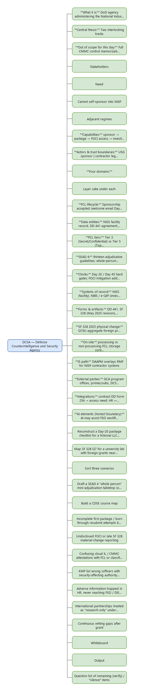
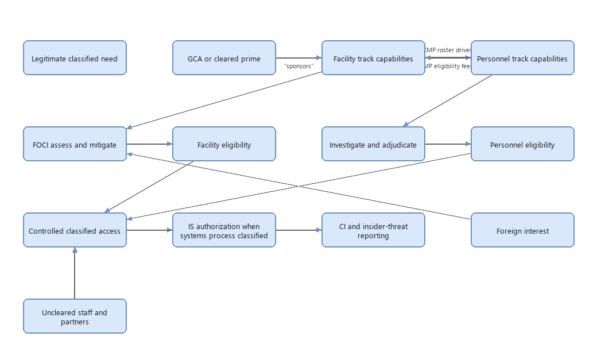
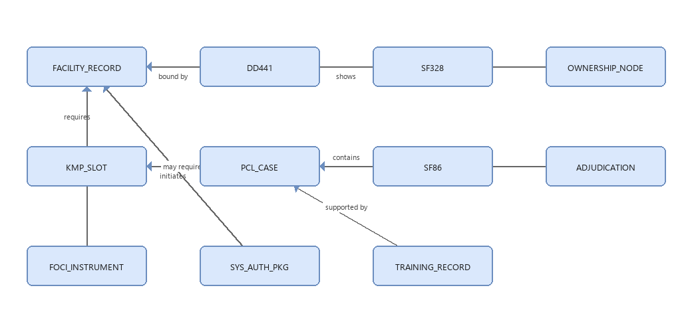
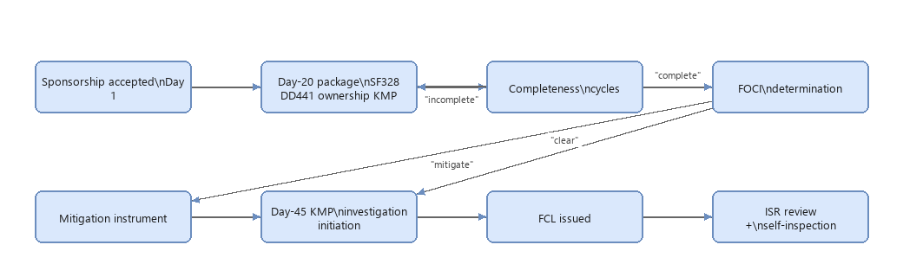
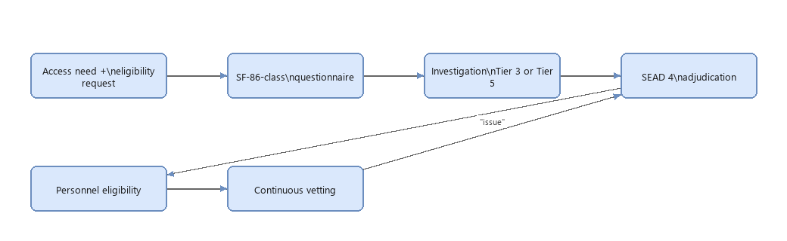
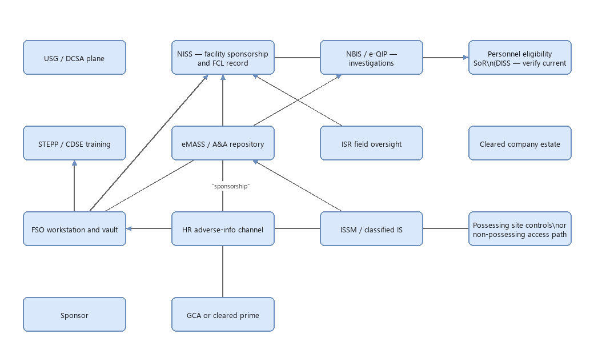
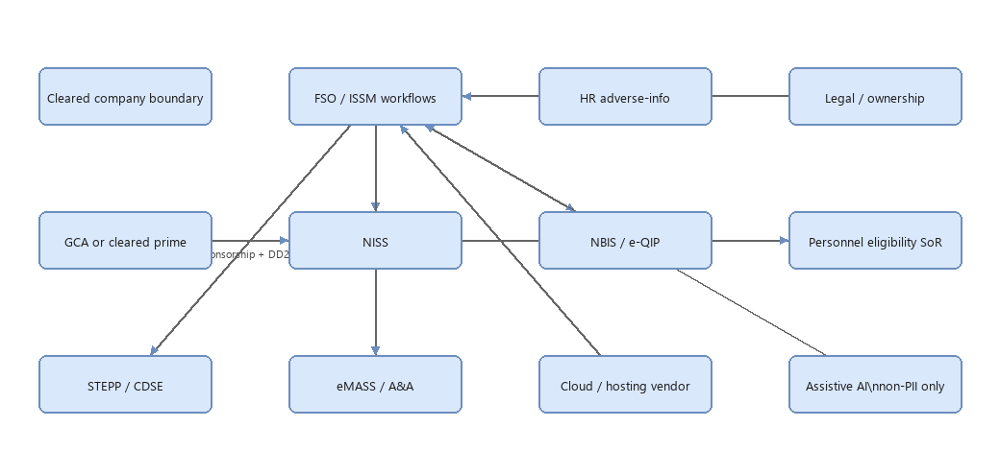
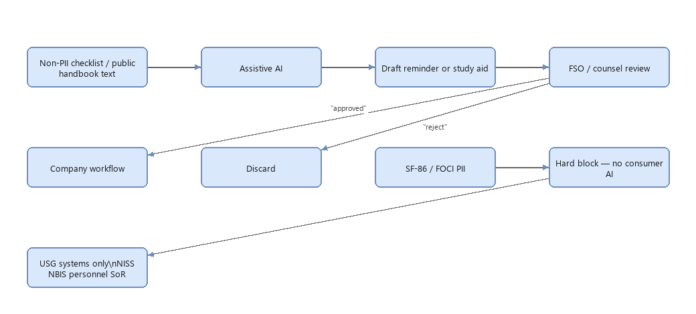

Each diagram as the rendered PNG, with the Mermaid source shown inline where one exists. The editable .drawio files are not published on this site.
00-mindmap

01-conceptual-1

Mermaid source
flowchart TB
subgraph Need["Legitimate classified need"]
GCA["GCA or currently cleared contractor"]
end
GCA -->|"sponsors"| FCLTRACK["Facility track capabilities"]
FCLTRACK -->|"KMP roster drives"| PCLTRACK["Personnel track capabilities"]
PCLTRACK -->|"KMP eligibility feeds"| FCLTRACK
FCLTRACK --> FOCI["FOCI assess and mitigate"]
FOCI --> FCL["Facility eligibility"]
PCLTRACK --> ADJ["Investigate and adjudicate"]
ADJ --> PCL["Personnel eligibility"]
FCL --> ACCESS["Controlled classified access"]
PCL --> ACCESS
ACCESS --> ISAUTH["IS authorization when systems process classified"]
ACCESS --> CI["CI and insider-threat reporting"]
FOREIGN["Foreign interest"] -.disclosure and risk.-> FOCI
UNCLEARED["Uncleared staff and partners"] -.boundary.-> ACCESS
02-logical-1

Mermaid source
erDiagram
FACILITY_RECORD ||--|| DD441 : "bound by"
FACILITY_RECORD ||--|| SF328 : "certifies FOCI"
FACILITY_RECORD ||--o{ OWNERSHIP_NODE : "shows"
FACILITY_RECORD ||--|{ KMP_SLOT : "requires"
KMP_SLOT ||--|| PCL_CASE : "initiates"
PCL_CASE ||--|| SF86 : "contains"
PCL_CASE ||--o| ADJUDICATION : "results in"
FACILITY_RECORD ||--o| FOCI_INSTRUMENT : "mitigated by"
FACILITY_RECORD ||--o{ SYS_AUTH_PKG : "may require"
PCL_CASE ||--o{ TRAINING_RECORD : "supported by"
02-logical-2

Mermaid source
flowchart LR
SPON["Sponsorship accepted\nDay 1"] --> D20["Day-20 package\nSF328 DD441 ownership KMP"]
D20 --> COMP{"Completeness\ncycles"}
COMP -->|"incomplete"| D20
COMP -->|"complete"| FOCI{"FOCI\ndetermination"}
FOCI -->|"mitigate"| MIT["Mitigation instrument"]
FOCI -->|"clear"| D45
MIT --> D45["DCSA due-date KMP\ninvestigation initiation"]
D45 --> GRANT["FCL issued"]
GRANT --> SUSTAIN["ISR review +\nself-inspection"]
02-logical-3

Mermaid source
flowchart LR NEED["Access need +\neligibility request"] --> Q["SF-86-class\nquestionnaire"] Q --> INV["Investigation\nTier 3 or Tier 5"] INV --> SEAD["SEAD 4\nadjudication"] SEAD --> ELIG["Personnel eligibility"] ELIG --> CV["Continuous vetting"] CV -->|"issue"| SEAD
03-physical-1

Mermaid source
flowchart TB
subgraph USG["USG / DCSA plane"]
NISS["NISS — facility sponsorship and FCL record"]
NBIS["eApp (DISS) — investigations"]
DISS["Personnel eligibility SoR\n(DISS — verify current)"]
STEPP["STEPP / CDSE training"]
EMASS["eMASS / A&A repository"]
ISR["ISR field oversight"]
end
subgraph Co["Cleared company estate"]
FSO["FSO workstation and vault"]
HR["HR adverse-info channel"]
ISSM["ISSM / classified IS"]
SITE["Possessing site controls\nor non-possessing access path"]
end
subgraph Sponsor["Sponsor"]
GCA["GCA or currently cleared contractor"]
end
GCA -->|"sponsorship"| NISS
FSO --> NISS
FSO --> NBIS
NBIS --> DISS
NISS --> DISS
FSO --> STEPP
ISSM --> EMASS
ISR --> NISS
HR --> FSO
SITE --> FSO
04-integration-ai-1

Mermaid source
flowchart LR
subgraph Co["Cleared company boundary"]
FSO["FSO / ISSM workflows"]
HR["HR adverse-info"]
LEG["Legal / ownership"]
end
GCA["GCA or currently cleared contractor"] -->|"sponsorship + DD254"| NISS["NISS"]
FSO <--> NISS
FSO <--> NBIS["eApp (DISS)"]
NBIS --> DISS["Personnel eligibility SoR"]
NISS --> DISS
FSO --> STEPP["STEPP / CDSE"]
FSO --> EMASS["eMASS / A&A"]
HR --> FSO
LEG --> FSO
CLOUD["Cloud / hosting vendor"] <--> FSO
AI["Assistive AI\nnon-PII only"] -.policy-gated.-> FSO
04-integration-ai-2

Mermaid source
flowchart LR
DOC["Non-PII checklist / public handbook text"] --> AI["Assistive AI"]
AI --> DRAFT["Draft reminder or study aid"]
DRAFT --> HUM{"FSO / counsel review"}
HUM -->|"approved"| WORK["Company workflow"]
HUM -->|"reject"| DROP["Discard"]
PII["SF-86 / FOCI PII"] --> BLOCK["Hard block — no consumer AI"]
BLOCK --> USG["USG systems only\nNISS NBIS personnel SoR"]